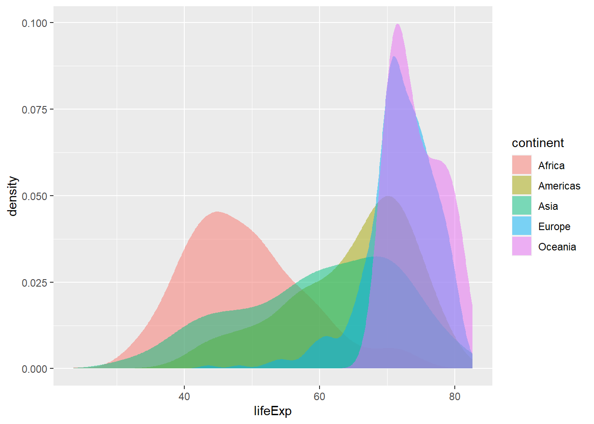
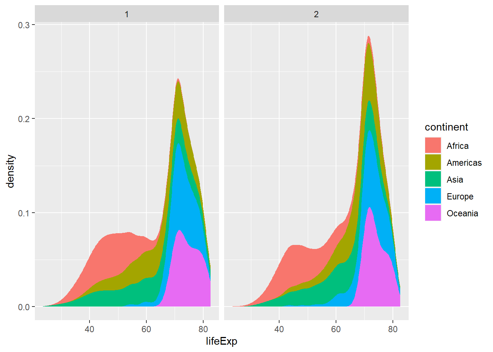

WiWi BrushUp Kurs 2022
Gapminder - Positionierung und Facetten
Zielsetzung
Unser Ziel ist einfach.
Schritt 1: Lernen wie die Positionierung von geometrischen Objekten und das Erzeugen von Facetten mithilfe von ggplot2 funktioniert.
Schritt 2: Gute Nudel Sterne abkassieren und beste Nudel werden.
Aufgaben
Mappe Farben zu Kontinenten
Am Ende unseres letzten Tutorials haben wir den folgenden Plot gesehen
Dem wollen wir uns nun von unserem vorherigen Plot aus annähern. Dieser hat uns gezeigt, dass die Verteilung der Lebenserwartung insgesamt folgendermaßen aussieht.
ggplot(data = gapminder, mapping = aes(x = lifeExp)) +
stat_density()Probieren wir nun aus, Farbe ins Spiel zu bringen. Verändere das Mapping, sodass die Farben der Variable continent zugeordnet werden. Wenn du das tust, dann wirst du den folgenden Plot erhalten.

Ok. Das ist nicht ganz das was du vermutlich erwartet hast, aber immerhin sehen wir nun unterschiedliche Kontinente. Hier wurden allerdings die unterschiedlichen Dichteplots gestapelt anstatt sie alle (wie eigentlich üblich) auf der x-Achse beginnen zu lassen. Persönlich finde ich solche Art von Grafiken schwierig zu lesen, aber es gibt auch Befürworter solcher Grafiken (siehe bspw. die verwandten Streamgraphs).
Positioniere die farbigen Flächen neu
Glücklicherweise darf ich in meinen Texten entscheiden, wie die Plots aussehen sollen. Lass uns deswegen die unterschiedlichen Kontinentplots zurück zur x-Achse bringen. Um das zu bewerkstelligen, müssen wir das position-Argument der stat_density()-Schicht unseres Plots verändern. Jeder geom- und stat-Schicht in ggplot2 hat ein solches Argument. Dies ist Teil der layered grammar of graphics auf der ggplot2 basiert. Schau dazu beispielsweise die Dokumentation von geom_density() und stat_density() an.
geom_density(
mapping = NULL,
data = NULL,
stat = "density",
position = "identity",
...,
na.rm = FALSE,
orientation = NA,
show.legend = NA,
inherit.aes = TRUE,
outline.type = "upper"
)stat_density(
mapping = NULL,
data = NULL,
geom = "area",
position = "stack",
...,
bw = "nrd0",
adjust = 1,
kernel = "gaussian",
n = 512,
trim = FALSE,
na.rm = FALSE,
orientation = NA,
show.legend = NA,
inherit.aes = TRUE
)Dieser Blick in die Dokumentation zeigt uns gleich mehrere Dinge:
- Beide
ggplot2-Schichten verwenden ganz schön viele Optionen/Argumente. Aber die meisten sind schon mit Werten (durch=) befüllt. Deshalb müssen wir gar nicht im Detail wissen, was jede Option macht. Uns geht es jetzt nur darum herauszufinden, wodurch die Positionseinstellungen verändert werden können. - Außerdem sehen wir nochmals, dass
stat_density()dasgeom = "area"verwendet. Deshalb zeichnetstat_density()eine Fläche. - Wir sehen, dass
stat_density()die Positionposition = "stack"verwendet. Das klingt doch schon genau nach dem was wir verändern müssen, um die gestapelten Flächen zur x-Achse zurückzuholen. - Wir müssten jetzt nur wissen, was wir statt
"stack"verwenden können. Glücklicherweise sehen wir, dassgeom_density()das Positionsargumentposition = "identity"verwendet. Probieren wir doch malstat_density()mit diesem Positionsargument zu verwenden.
Probiere nun aus, stat_density() mit position = "identity" zu verwenden. Dies sollte dann so aussehen:
Mache die Flächen durchsichtig
Na das hat doch gut geklappt. Leider überdecken sich jetzt die Flächen. Aber wenn wir die Farben ein wenig transparent machen, dann können wir hoffentlich mehr sehen.

Wundervoll! Das haben wir ganz toll gemacht. Zusätzlich jetzt fände ich es jetzt noch klasse, wenn jede Fläche schwarz umrandet wird. Erinnert euch dafür an euren ersten Versuch, Farben zu Kontinenten zuordnen. Die Chancen stehen gar nicht schlecht, dass euer Plot so aussah:
Umrande die Flächen
Wie ihr mittlerweile wisst, lag das daran, dass ihr continent zu col bzw. color oder colour zugeordnet habt. Dies hat die Linienfarbe und nicht die Füllfarbe fill verändert. Aber nichts ist umsonst! Dadurch wisst ihr jetzt, dass ihr das Aussehen der umrandenden Linie so beinflussen könnt. Probiert also nun dieses Wissen auszunutzen, um die Ränder schwarz zu machen:
Gib jedem Kontinent ein eigenes Fenster / eine eigene Facette
Alles klar, wir haben getan was wir konnten. Der Plot ist mittlerweile besser lesbar. Aber schön ist was anderes. Die Flächen überschneiden sich einfach immer noch ziemlich viel. Vielleicht sollten wir jedem Kontinent ein eigenes Fenster geben. In ggplot2 funktioniert das über die sogenannten facet_*() Funktionen. Schauen wir uns mal an, was die liefern. Wir starten wieder mit unserer Ursprungsgrafik.
ggplot(data = gapminder, mapping = aes(x = lifeExp, fill = continent)) +
stat_density()Durch Hinzufügen einer einzigen Zeile kriegen wir schon genau das, was wir wollen.
ggplot(data = gapminder, mapping = aes(x = lifeExp, fill = continent)) +
stat_density() +
facet_wrap(facets = vars(continent))Das war einfach. Durch die einzelnen Fenster konnten wir uns die ganze Positionierungs- und Transparenzgeschichten sparen. Jetzt müssen wir nur noch verstehen, wie der Code zu verstehen ist. Dazu sei gesagt, dass ein Plot in der layered grammar of graphics in facets aufgeteilt werden kann. Im Wesentlichen bezeichnet dieser Ansatz Fenster als Facetten. Somit sagt der Ansatz “Wir können unsere Daten aufteilen und jeden Teil in ein eigenes kleines Fenster zeichnen. Zusammengenommen formen unsere kleinen Fenster nun eine neue Grafik.”
Das ist ziemlich banal und alles andere alles andere als eine rocket science. Aber wie ist dieses Konzept in ggplot2 umgesetzt? Mit einer weiteren Schicht. Du erinnerst dich? Wie in jeder guten Jenga-Partie wird in der layered grammar of graphics geschichtet was das Zeug hält In diesem Fall ist die Facetten/Fenster-Schicht facet_wrap().
Wiederum muss diese Funktion wissen, was sie machen soll. Wie soll der Datensatz gesplittet werden? Wir könnten vollkommen unabhängig vom Datensatz eine Regel wie “Teile den Datensatz einfach in zwei Hälften” erfinden. Das sähe hier so aus.
wilde_regel <- c(
rep(1, times = 1704 / 2), # Datensatz hat 1704 Einträge
rep(2, times = 1704 / 2)
)
ggplot(data = gapminder, mapping = aes(x = lifeExp, fill = continent)) +
stat_density() +
facet_wrap(facets = wilde_regel)
Ihr seht, dass unsere Grafik einfach in zwei Hälften geteilt wurde. Das hatte nichts mit irgendeiner Größe aus dem gapminder Datensatz (wie bspw. continent) zu tun. Deswegen konnte hier auf die Funktion vars() verzichtet werden. Wenn wir nun allerdings anhand continent teilen möchten, so müssen wir facet_wrap() mitteilen, dass es nicht eine Variable continent irgendwo suchen soll (analog zu der Variable wilde_regel im vorherigen Beispiel). Stattdessen geben wir R zu verstehen, dass continent im Datensatz steckt. Dies passiert mit der Hilsfunktion vars().
Lange Rede, kurzer Sinn: vars() in facet_wrap() erfüllt eine ähnliche Funktion wie aes() in mapping = aes(x = lifeExp). Wenn etwas von innerhalb des Datensatzes genommen werden soll, dann brauchen wir diese Hilfsfunktionen. Ansonsten verzichten wir auf diese Helfer.
Was kommt als nächstes?
Somit sind wir einen Schritt näher dran, alle Komponenten der layered grammar of graphics zu verstehen. Außerdem sind wir nun deutlich näher an der Grafik, die wir nachbauen wollten. Hier der direkte Vergleich.


Im nächsten Tutorial lernen wir über Koordinatensysteme, scales und theme(). Damit vervollständigen wir unser Wissen über die Komponenten der layered grammar of graphics. Dann können wir diese Grafik auch wie gewünscht rekonstruieren.